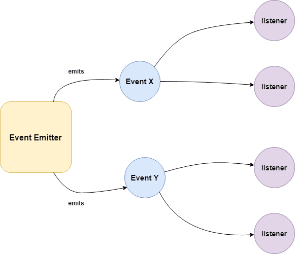

<!DOCTYPE html>
<html lang="en-us">
  <head>
     <meta charset="UTF-8">
<meta name="viewport" content="width=device-width, initial-scale=1">
<meta http-equiv="X-UA-Compatible" content="IE=edge">
<meta name="generator" content="Hugo 0.83.1 with theme Tranquilpeak 0.4.8-BETA">
<meta name="author" content="Đặng Tuấn Dương">
<meta name="keywords" content="javascript, nodejs, eventemitter">
<meta name="description" content="EventEmitter có thể nói chính là linh hồn của Nodejs trong việc triển khai kiến trúc hướng sự kiện. Không chỉ class Server, mà rất nhiều class ở các module khác nhau đều kế thừa từ class này.">


<meta property="og:description" content="EventEmitter có thể nói chính là linh hồn của Nodejs trong việc triển khai kiến trúc hướng sự kiện. Không chỉ class Server, mà rất nhiều class ở các module khác nhau đều kế thừa từ class này.">
<meta property="og:type" content="article">
<meta property="og:title" content="Nodejs Core Module: EventEmitter (P1)">
<meta name="twitter:title" content="Nodejs Core Module: EventEmitter (P1)">
<meta property="og:url" content="/2021/05/nodejs-core-module-eventemitter-p1/">
<meta property="twitter:url" content="/2021/05/nodejs-core-module-eventemitter-p1/">
<meta property="og:site_name" content="duongdt&#39;s blog">
<meta property="og:description" content="EventEmitter có thể nói chính là linh hồn của Nodejs trong việc triển khai kiến trúc hướng sự kiện. Không chỉ class Server, mà rất nhiều class ở các module khác nhau đều kế thừa từ class này.">
<meta name="twitter:description" content="EventEmitter có thể nói chính là linh hồn của Nodejs trong việc triển khai kiến trúc hướng sự kiện. Không chỉ class Server, mà rất nhiều class ở các module khác nhau đều kế thừa từ class này.">
<meta property="og:locale" content="vi">

  
    <meta property="article:published_time" content="2021-05-02T00:00:00">
  
  
    <meta property="article:modified_time" content="2021-05-02T00:00:00">
  
  
  
  
    
      <meta property="article:tag" content="nodejs">
    
  


<meta name="twitter:card" content="summary">


  <meta property="og:image" content="/images/avatar.jpeg">
  <meta property="twitter:image" content="/images/avatar.jpeg">


    <title>Nodejs Core Module: EventEmitter (P1)</title>

    <link
      rel="icon"
      href="/images/avatar.jpeg"
    />
     

    <link rel="canonical" href="/2021/05/nodejs-core-module-eventemitter-p1/" />

    <link
      rel="stylesheet"
      href="https://cdnjs.cloudflare.com/ajax/libs/highlight.js/11.2.0/styles/default.min.css"
    />
    <script src="https://cdnjs.cloudflare.com/ajax/libs/highlight.js/11.2.0/highlight.min.js"></script>
    
    <script src="https://cdnjs.cloudflare.com/ajax/libs/highlight.js/11.2.0/highlight.min.js"></script>
    <script src="https://cdnjs.cloudflare.com/ajax/libs/highlight.js/11.2.0/languages/javascript.min.js"></script>

    
    <link
      rel="stylesheet"
      href="https://cdnjs.cloudflare.com/ajax/libs/font-awesome/4.7.0/css/font-awesome.min.css"
      integrity="sha256-eZrrJcwDc/3uDhsdt61sL2oOBY362qM3lon1gyExkL0="
      crossorigin="anonymous"
    />
    <link
      rel="stylesheet"
      href="https://cdnjs.cloudflare.com/ajax/libs/fancybox/2.1.4/jquery.fancybox.min.css"
      integrity="sha256-vuXZ9LGmmwtjqFX1F+EKin1ThZMub58gKULUyf0qECk="
      crossorigin="anonymous"
    />
    <link
      rel="stylesheet"
      href="https://cdnjs.cloudflare.com/ajax/libs/fancybox/2.1.4/helpers/jquery.fancybox-thumbs.min.css"
      integrity="sha256-SEa4XYAHihTcEP1f5gARTB2K26Uk8PsndQYHQC1f4jU="
      crossorigin="anonymous"
    />
    
    
    <link
      rel="stylesheet"
      href="/css/style-twzjdbqhmnnacqs0pwwdzcdbt8yhv8giawvjqjmyfoqnvazl0dalmnhdkvp7.min.css"
    />
    
        <script>
  hljs.highlightAll()
</script>

  </head>
</html>

  <body>
    <div id="blog">
      <header id="header" data-behavior="2">
  <i id="btn-open-sidebar" class="fa fa-lg fa-bars"></i>
  <div class="header-title">
    <a class="header-title-link" href="/">duongdt&#39;s blog</a>
  </div>
  
</header>

      <nav id="sidebar" data-behavior="2">
  <div class="sidebar-container">
    
      <div class="sidebar-profile">
        <a href="/#about">
          
        </a>
        <h4 class="sidebar-profile-name">Đặng Tuấn Dương</h4>
        
          <h5 class="sidebar-profile-bio"><a href="mailto:duongdt0291@gmail.com">duongdt0291@gmail.com</a></h5>
        
      </div>
    
    <ul class="sidebar-buttons">
      
  <li class="sidebar-button">
    
      <a class="sidebar-button-link " href="/posts">
    
      <i class="sidebar-button-icon fa fa-lg fa-home"></i>
      
      <span class="sidebar-button-desc">Trang chủ</span>
    </a>
  </li>

  <li class="sidebar-button">
    
      <a class="sidebar-button-link " href="/tags">
    
      <i class="sidebar-button-icon fa fa-lg fa-tags"></i>
      
      <span class="sidebar-button-desc">Thẻ thông tin</span>
    </a>
  </li>

  <li class="sidebar-button">
    
      <a class="sidebar-button-link " href="/#about">
    
      <i class="sidebar-button-icon fa fa-lg fa-user-circle"></i>
      
      <span class="sidebar-button-desc">Thông tin</span>
    </a>
  </li>


    </ul>
    <ul class="sidebar-buttons">
      

    </ul>
    <ul class="sidebar-buttons">
      

    </ul>
  </div>
</nav>

      

      <div id="main" data-behavior="2"
        class="
               hasCoverMetaIn
               ">
        <article class="post" itemscope itemType="http://schema.org/BlogPosting">
          
          
            <div class="post-header main-content-wrap text-left">
  
    <h1 class="post-title" itemprop="headline">
      Nodejs Core Module: EventEmitter (P1)
    </h1>
  
  
  <div class="postShorten-meta post-meta">
    
      <time itemprop="datePublished" datetime="2021-05-02T00:00:00Z">
        
  
  
  
  
    2 tháng 5 2021
  

      </time>
    
    
  </div>

</div>
          
          <div class="post-content markdown" itemprop="articleBody">
            <div class="main-content-wrap">
              <p>Có lẽ phần lớn mọi người đều biết hoặc được nghe nói rằng Nodejs được xây dựng theo kiến trúc hướng sự kiện (Event Driven Architecture). Ở bài viết này, chúng ta sẽ cùng nhau tìm hiểu cách Nodejs triển khai kiến trúc này. Qua đó giúp chúng ta hiểu hơn về cách Nodejs hoạt động cũng như có thể áp dụng để giải quyết 1 số bài toán gặp trong thực tế.</p>
<p>Hướng sự kiện là một dạng kiến trúc phần mềm được xây dựng trên luồng các sự kiện, sử dụng sự kiện như là phương tiện giao tiếp giữa các thành phần hệ thống. Về cơ bản, hệ thống được xây dựng xung quanh các thao tác như tạo và phản hồi lại các sự kiện.</p>
<p>Phần lớn core module của nodejs cũng được xây dựng dựa trên kiến trúc này.</p>
<p>Ví dụ:</p>
<div class="highlight"><pre style="color:#f8f8f2;background-color:#272822;-moz-tab-size:4;-o-tab-size:4;tab-size:4"><code class="language-jsx" data-lang="jsx"><span style="color:#66d9ef">const</span> <span style="color:#a6e22e">server</span> <span style="color:#f92672">=</span> <span style="color:#a6e22e">http</span>.<span style="color:#a6e22e">createServer</span>()

<span style="color:#a6e22e">server</span>.<span style="color:#a6e22e">on</span>(<span style="color:#e6db74">&#39;request&#39;</span>, (<span style="color:#a6e22e">req</span>, <span style="color:#a6e22e">res</span>) =&gt; {
  <span style="color:#a6e22e">console</span>.<span style="color:#a6e22e">log</span>(<span style="color:#e6db74">&#39;Handling request&#39;</span>)
  <span style="color:#a6e22e">res</span>.<span style="color:#a6e22e">end</span>(<span style="color:#e6db74">&#39;Request receved&#39;</span>)
})
</code></pre></div><p>Phương thức <strong>on(eventName, listener)</strong> được sử dụng để đăng kí hàm callback (listener) cho sự kiện có tên là <strong>eventName</strong>. Khi sự kiện eventName xảy ra, thì listener sẽ được gọi và thực thi.</p>
<p>Ở ví dụ trên, mỗi khi có 1 request từ client gửi đến, hệ thống sẽ phát ra sự kiện &lsquo;<strong>request</strong>&rsquo;, listener khai báo được gọi, màn hình sẽ in ra dòng chữ &ldquo;Handling request&rdquo; đồng thời trả về cho client chuỗi &ldquo;Request received&rdquo;.</p>
<p>Object server là 1 instance của class Server. Và nếu mọi người xem khai báo class sẽ thấy, class Server được kế thừa từ class NetServer, và class này được kế thừa từ 1 class khác là EventEmitter.</p>
<h3 id="eventemitter">EventEmitter</h3>
<p>EventEmitter có thể nói chính là linh hồn của Nodejs trong việc triển khai kiến trúc hướng sự kiện. Không chỉ class Server, mà rất nhiều class ở các module khác nhau đều kế thừa từ class này.</p>
<p>Concept của nó cũng rất đơn giản. 1 emitter object (được tạo từ class EventEmitter hoặc class kế thừa nó) thực hiện 2 nhiệm vụ chính:</p>
<ul>
<li>phát sự kiện</li>
<li>lắng nghe sự kiện và tiến hành thực thi các listener. Các bạn chú ý là <em>các listener</em> nhé, nó có nghĩa là mình có thể khai báo 1 hoặc nhiều listener cho 1 sự kiện. Và các sự kiện này sẽ được thực thi lần lượt dựa theo thứ tự khai báo.</li>
</ul>
<p></p>
<p>Ví dụ:</p>
<div class="highlight"><pre style="color:#f8f8f2;background-color:#272822;-moz-tab-size:4;-o-tab-size:4;tab-size:4"><code class="language-jsx" data-lang="jsx"><span style="color:#66d9ef">import</span> <span style="color:#a6e22e">EventEmitter</span> <span style="color:#a6e22e">from</span> <span style="color:#e6db74">&#39;events&#39;</span>

<span style="color:#66d9ef">const</span> <span style="color:#a6e22e">promEmitter</span> <span style="color:#f92672">=</span> <span style="color:#66d9ef">new</span> <span style="color:#a6e22e">EventEmitter</span>()

<span style="color:#a6e22e">promEmitter</span>.<span style="color:#a6e22e">on</span>(<span style="color:#e6db74">&#39;starting&#39;</span>, (<span style="color:#a6e22e">time</span><span style="color:#f92672">:</span> Date) =&gt; {
  <span style="color:#a6e22e">console</span>.<span style="color:#a6e22e">log</span>(<span style="color:#e6db74">&#39;Prom is starting at:&#39;</span>, <span style="color:#a6e22e">time</span>.<span style="color:#a6e22e">toLocaleTimeString</span>())
})

<span style="color:#75715e">// phương thức on và addListener đều để thêm listener vào vị trí cuối cùng,
</span><span style="color:#75715e">// tức là nó sẽ được thực hiện sau các listener đã được khai báo trước đó.
</span><span style="color:#75715e">// Nếu bạn muốn khai báo 1 listener và thực hiện trước, thì dùng prependListener
</span><span style="color:#75715e"></span><span style="color:#a6e22e">promEmitter</span>.<span style="color:#a6e22e">addListener</span>(<span style="color:#e6db74">&#39;starting&#39;</span>, () =&gt; {
  <span style="color:#a6e22e">console</span>.<span style="color:#a6e22e">log</span>(<span style="color:#e6db74">&#39;2nd listener of event starting&#39;</span>)
})

<span style="color:#a6e22e">promEmitter</span>.<span style="color:#a6e22e">on</span>(<span style="color:#e6db74">&#39;end&#39;</span>, (<span style="color:#a6e22e">time</span><span style="color:#f92672">:</span> Date) =&gt; {
  <span style="color:#a6e22e">console</span>.<span style="color:#a6e22e">log</span>(<span style="color:#e6db74">&#39;Prom end at:&#39;</span>, <span style="color:#a6e22e">time</span>.<span style="color:#a6e22e">toLocaleTimeString</span>())
})

<span style="color:#a6e22e">promEmitter</span>.<span style="color:#a6e22e">emit</span>(<span style="color:#e6db74">&#39;starting&#39;</span>, <span style="color:#66d9ef">new</span> Date())

<span style="color:#a6e22e">setTimeout</span>(() =&gt; <span style="color:#a6e22e">promEmitter</span>.<span style="color:#a6e22e">emit</span>(<span style="color:#e6db74">&#39;end&#39;</span>, <span style="color:#66d9ef">new</span> Date()), <span style="color:#ae81ff">5000</span>)

<span style="color:#75715e">// Kết quả:
</span><span style="color:#75715e">// Prom is starting at: 2:26:54 PM
</span><span style="color:#75715e">// 2nd listener of event starting
</span><span style="color:#75715e">// Prom end at: 2:26:59 PM
</span></code></pre></div><p>Lưu ý: object emitter nào bắn thì chỉ object emitter đó bắt được sự kiện.</p>
<div class="highlight"><pre style="color:#f8f8f2;background-color:#272822;-moz-tab-size:4;-o-tab-size:4;tab-size:4"><code class="language-jsx" data-lang="jsx"><span style="color:#66d9ef">const</span> <span style="color:#a6e22e">emitter1</span> <span style="color:#f92672">=</span> <span style="color:#66d9ef">new</span> <span style="color:#a6e22e">EventEmitter</span>()
<span style="color:#66d9ef">const</span> <span style="color:#a6e22e">emitter2</span> <span style="color:#f92672">=</span> <span style="color:#66d9ef">new</span> <span style="color:#a6e22e">EventEmitter</span>()

<span style="color:#a6e22e">emitter1</span>.<span style="color:#a6e22e">on</span>(<span style="color:#e6db74">&#39;start&#39;</span>, () =&gt; <span style="color:#a6e22e">console</span>.<span style="color:#a6e22e">log</span>(<span style="color:#e6db74">&#39;Emitter 1&#39;</span>)

<span style="color:#a6e22e">emitter2</span>.<span style="color:#a6e22e">emit</span>(<span style="color:#e6db74">&#39;start&#39;</span>) <span style="color:#75715e">// Không có gì xảy ra
</span><span style="color:#75715e"></span>
<span style="color:#a6e22e">emitter1</span>.<span style="color:#a6e22e">emit</span>(<span style="color:#e6db74">&#39;start&#39;</span>) <span style="color:#75715e">// Emitter 1
</span></code></pre></div><p>Vậy các listener sẽ được thực thi ngay khi sự kiện emit hay JS vẫn thực hiện các câu lệnh phía dưới xong hết mới rồi mới thực thi các listener. Chúng ta cùng xem ví dụ dưới:</p>
<div class="highlight"><pre style="color:#f8f8f2;background-color:#272822;-moz-tab-size:4;-o-tab-size:4;tab-size:4"><code class="language-jsx" data-lang="jsx"><span style="color:#66d9ef">import</span> <span style="color:#a6e22e">EventEmitter</span> <span style="color:#a6e22e">from</span> <span style="color:#e6db74">&#39;events&#39;</span>

<span style="color:#66d9ef">class</span> <span style="color:#a6e22e">CustomEmitter</span> <span style="color:#66d9ef">extends</span> <span style="color:#a6e22e">EventEmitter</span> {
  <span style="color:#a6e22e">execute</span>() {
    <span style="color:#66d9ef">this</span>.<span style="color:#a6e22e">emit</span>(<span style="color:#e6db74">&#39;before&#39;</span>)
    <span style="color:#a6e22e">console</span>.<span style="color:#a6e22e">log</span>(<span style="color:#e6db74">&#39;Excuting&#39;</span>)
    <span style="color:#66d9ef">this</span>.<span style="color:#a6e22e">emit</span>(<span style="color:#e6db74">&#39;after&#39;</span>)
  }
}

<span style="color:#66d9ef">const</span> <span style="color:#a6e22e">emitter</span> <span style="color:#f92672">=</span> <span style="color:#66d9ef">new</span> <span style="color:#a6e22e">CustomEmitter</span>()

<span style="color:#a6e22e">emitter</span>.<span style="color:#a6e22e">on</span>(<span style="color:#e6db74">&#39;before&#39;</span>, () =&gt; {
  <span style="color:#a6e22e">console</span>.<span style="color:#a6e22e">log</span>(<span style="color:#e6db74">&#39;Before Execute&#39;</span>)
})

<span style="color:#a6e22e">emitter</span>.<span style="color:#a6e22e">on</span>(<span style="color:#e6db74">&#39;after&#39;</span>, () =&gt; {
  <span style="color:#a6e22e">console</span>.<span style="color:#a6e22e">log</span>(<span style="color:#e6db74">&#39;After Execute&#39;</span>)
})

<span style="color:#a6e22e">emitter</span>.<span style="color:#a6e22e">execute</span>()

<span style="color:#75715e">// Màn hình in ra kết quả như sau:
</span><span style="color:#75715e">// Before Execute
</span><span style="color:#75715e">// Excuting
</span><span style="color:#75715e">// Before Execute
</span></code></pre></div><p>Có thể thấy rằng, khi sự kiện &lsquo;before&rsquo; được bắn, các listener sẽ thực thi ngay lập tức, chứ JS ko chạy tiếp ngay dòng console.log(&lsquo;Executing&rsquo;) rồi mới thực thi các listener hoặc thực thi chúng song song. Trong trường hợp trong listener có xử lí bất đồng bộ, thì nó cũng sẽ xử lí như khi gọi 1 function bình thường thôi, không có gì khác biết cả. Ai chưa hiểu về event loop, callstack cũng như cơ chế JS xử lí bất đồng bộ thì có thể đọc <a href="https://duongdt0291.github.io/2021/04/js-concept-call-stack-event-loop-p6/">bài viết này</a> của mình nhé.</p>
<div class="highlight"><pre style="color:#f8f8f2;background-color:#272822;-moz-tab-size:4;-o-tab-size:4;tab-size:4"><code class="language-jsx" data-lang="jsx"><span style="color:#a6e22e">emitter</span>.<span style="color:#a6e22e">on</span>(<span style="color:#e6db74">&#39;before&#39;</span>, () =&gt; {
  <span style="color:#a6e22e">console</span>.<span style="color:#a6e22e">log</span>(<span style="color:#e6db74">&#39;Before synchronous&#39;</span>)
  <span style="color:#a6e22e">setTimeout</span>(() =&gt; <span style="color:#a6e22e">console</span>.<span style="color:#a6e22e">log</span>(<span style="color:#e6db74">&#39;Before Execute&#39;</span>), <span style="color:#ae81ff">0</span>)
})

<span style="color:#a6e22e">emitter</span>.<span style="color:#a6e22e">on</span>(<span style="color:#e6db74">&#39;after&#39;</span>, () =&gt; {
  <span style="color:#a6e22e">console</span>.<span style="color:#a6e22e">log</span>(<span style="color:#e6db74">&#39;After Execute&#39;</span>)
})

<span style="color:#a6e22e">emitter</span>.<span style="color:#a6e22e">execute</span>()

<span style="color:#75715e">// Excuting
</span><span style="color:#75715e">// Before synchronous
</span><span style="color:#75715e">// After Execute
</span><span style="color:#75715e">// Before Execute
</span></code></pre></div><h3 id="cách-bắt-và-xử-lí-lỗi">Cách bắt và xử lí lỗi</h3>
<p>1 điều nữa mình muốn các bạn chú ý, đó là việc bắt lỗi. Sự kiện mặc định để bắt lỗi của emitter object là <strong>error.</strong> Trong trường hợp code emit sự kiện error, hoặc thown lỗi là instace của class Error mà không có listener nào được khai báo để phản hồi, process đang chạy nodejs sẽ bị crash, ứng dụng sẽ ngay lập tức dừng hoạt động.</p>
<div class="highlight"><pre style="color:#f8f8f2;background-color:#272822;-moz-tab-size:4;-o-tab-size:4;tab-size:4"><code class="language-jsx" data-lang="jsx"><span style="color:#66d9ef">import</span> <span style="color:#a6e22e">EventEmitter</span> <span style="color:#a6e22e">from</span> <span style="color:#e6db74">&#39;events&#39;</span>

<span style="color:#66d9ef">class</span> <span style="color:#a6e22e">ErrorEmitter</span> <span style="color:#66d9ef">extends</span> <span style="color:#a6e22e">EventEmitter</span> {
  <span style="color:#a6e22e">execute</span>() {
    <span style="color:#66d9ef">throw</span> <span style="color:#66d9ef">new</span> Error(<span style="color:#e6db74">&#39;error&#39;</span>)
    <span style="color:#75715e">// hoặc
</span><span style="color:#75715e"></span>    <span style="color:#66d9ef">this</span>.<span style="color:#a6e22e">emit</span>(<span style="color:#e6db74">&#39;error&#39;</span>, <span style="color:#66d9ef">new</span> Error(<span style="color:#e6db74">&#39;error&#39;</span>))
  }
}

<span style="color:#66d9ef">const</span> <span style="color:#a6e22e">emitter</span> <span style="color:#f92672">=</span> <span style="color:#66d9ef">new</span> <span style="color:#a6e22e">ErrorEmitter</span>()

<span style="color:#a6e22e">emitter</span>.<span style="color:#a6e22e">execute</span>()
</code></pre></div><p></p>
<p>Để giải quyết thì chúng ta có thể xử lí như sau:</p>
<div class="highlight"><pre style="color:#f8f8f2;background-color:#272822;-moz-tab-size:4;-o-tab-size:4;tab-size:4"><code class="language-jsx" data-lang="jsx"><span style="color:#66d9ef">class</span> <span style="color:#a6e22e">ErrorEmitter</span> <span style="color:#66d9ef">extends</span> <span style="color:#a6e22e">EventEmitter</span> {
  <span style="color:#a6e22e">execute</span>() {
    <span style="color:#66d9ef">try</span> {
      <span style="color:#66d9ef">throw</span> <span style="color:#66d9ef">new</span> Error(<span style="color:#e6db74">&#39;error&#39;</span>)
    } <span style="color:#66d9ef">catch</span> (<span style="color:#a6e22e">error</span>) {
      <span style="color:#66d9ef">this</span>.<span style="color:#a6e22e">emit</span>(<span style="color:#e6db74">&#39;error&#39;</span>, <span style="color:#a6e22e">error</span>)
    }
  }
}

<span style="color:#66d9ef">const</span> <span style="color:#a6e22e">emitter</span> <span style="color:#f92672">=</span> <span style="color:#66d9ef">new</span> <span style="color:#a6e22e">ErrorEmitter</span>()

<span style="color:#a6e22e">emitter</span>.<span style="color:#a6e22e">on</span>(<span style="color:#e6db74">&#39;error&#39;</span>, (<span style="color:#a6e22e">err</span>) =&gt; <span style="color:#a6e22e">console</span>.<span style="color:#a6e22e">log</span>(<span style="color:#e6db74">&#39;ERROR&#39;</span>, <span style="color:#a6e22e">err</span>))

<span style="color:#a6e22e">emitter</span>.<span style="color:#a6e22e">execute</span>()
</code></pre></div><h3 id="ứng-dụng-thực-tế">Ứng dụng thực tế</h3>
<p>Qua những phần trên, chúng ta đã nắm được tư tưởng cũng như cách sử dụng EventEmitter. Vậy ngoài việc được các core module trong Nodejs sử dụng, chúng ta có thể sử dụng trong code như thế nào?</p>
<p>Do 1 sự kiện, có thể gắn 1 hoặc nhiều listerner, do vậy giúp chúng ta có thể tách code trong 1 số trường hợp không cần logic tập trung 1 chỗ.</p>
<p>Ví dụ: có 3 đối tượng User, Post, và Comment. Khi user bị xóa đi, chúng ta cần xóa toàn bộ bài viết cũng như comment. Thực tế sau này cũng không biết là khi user xóa, chúng ta phải xóa những gì nữa. Lúc này, có thể áp dụng EventEmitter để bắn sự kiện User bị xóa. Và sẽ bắt sự kiện ở những chỗ nào cần xử lí.</p>
<div class="highlight"><pre style="color:#f8f8f2;background-color:#272822;-moz-tab-size:4;-o-tab-size:4;tab-size:4"><code class="language-jsx" data-lang="jsx"><span style="color:#75715e">// emitter.ts
</span><span style="color:#75715e"></span><span style="color:#66d9ef">export</span> <span style="color:#66d9ef">const</span> <span style="color:#a6e22e">emitter</span> <span style="color:#f92672">=</span> <span style="color:#66d9ef">new</span> <span style="color:#a6e22e">EventEmitter</span>()

<span style="color:#75715e">// user.service.ts
</span><span style="color:#75715e"></span><span style="color:#66d9ef">import</span> { <span style="color:#a6e22e">emitter</span> } <span style="color:#a6e22e">from</span> <span style="color:#e6db74">&#34;emitter.ts&#34;</span>

<span style="color:#66d9ef">export</span> <span style="color:#66d9ef">const</span> <span style="color:#a6e22e">deleteUser</span>(<span style="color:#a6e22e">userId</span>) =&gt; {
	<span style="color:#75715e">// Xóa user ...
</span><span style="color:#75715e"></span>
	<span style="color:#a6e22e">emitter</span>.<span style="color:#a6e22e">emit</span>(<span style="color:#e6db74">&#34;UserDeleted&#34;</span>, <span style="color:#a6e22e">userId</span>)

	<span style="color:#75715e">// Do something
</span><span style="color:#75715e"></span>}

<span style="color:#75715e">// post.service.ts
</span><span style="color:#75715e"></span><span style="color:#66d9ef">import</span> { <span style="color:#a6e22e">emitter</span> } <span style="color:#a6e22e">from</span> <span style="color:#e6db74">&#34;emitter.ts&#34;</span>

<span style="color:#a6e22e">emit</span>.<span style="color:#a6e22e">on</span>(<span style="color:#e6db74">&#34;UserDeleted&#34;</span>, (<span style="color:#a6e22e">userId</span>) =&gt; {
	<span style="color:#75715e">// Xóa bài viết được tạo bởi user ...
</span><span style="color:#75715e"></span>})

<span style="color:#75715e">// comment.service.ts
</span><span style="color:#75715e"></span><span style="color:#66d9ef">import</span> { <span style="color:#a6e22e">emitter</span> } <span style="color:#a6e22e">from</span> <span style="color:#e6db74">&#34;emitter.ts&#34;</span>

<span style="color:#a6e22e">emit</span>.<span style="color:#a6e22e">on</span>(<span style="color:#e6db74">&#34;UserDeleted&#34;</span>, (<span style="color:#a6e22e">userId</span>) =&gt; {
	<span style="color:#75715e">// Xóa comment được tạo bởi user ...
</span><span style="color:#75715e"></span>})
</code></pre></div><p>Lưu ý là các listener sẽ được JS xử lí ngay lập tức, do vậy nếu bạn không muốn việc thực hiện ngay, mà muốn thực hiện sau để không ảnh hưởng đến hàm deleteUser nếu chẳng may có lỗi xảy ra ở các listener, thì có thể sử dụng <strong>setImmediate</strong> như sau:</p>
<div class="highlight"><pre style="color:#f8f8f2;background-color:#272822;-moz-tab-size:4;-o-tab-size:4;tab-size:4"><code class="language-jsx" data-lang="jsx"><span style="color:#75715e">// comment.service.ts
</span><span style="color:#75715e"></span><span style="color:#66d9ef">import</span> { <span style="color:#a6e22e">emitter</span> } <span style="color:#a6e22e">from</span> <span style="color:#e6db74">&#34;emitter.ts&#34;</span>

<span style="color:#a6e22e">emit</span>.<span style="color:#a6e22e">on</span>(<span style="color:#e6db74">&#34;UserDeleted&#34;</span>, (<span style="color:#a6e22e">userId</span>) =&gt; {
	<span style="color:#a6e22e">setImmediate</span>(() =&gt; {
		<span style="color:#75715e">// Xóa comment được tạo bởi user ...
</span><span style="color:#75715e"></span>	}
})
</code></pre></div><p>Tham khảo:</p>
<ul>
<li><a href="https://medium.com/edge-coders/understanding-node-js-event-driven-architecture-223292fcbc2d">https://medium.com/edge-coders/understanding-node-js-event-driven-architecture-223292fcbc2d</a></li>
<li><a href="https://dev.to/cpuram1/events-and-event-driven-architecture-in-nodejs-792">https://dev.to/cpuram1/events-and-event-driven-architecture-in-nodejs-792</a></li>
<li><a href="https://medium.com/developers-arena/nodejs-event-emitters-for-beginners-and-for-experts-591e3368fdd2">https://medium.com/developers-arena/nodejs-event-emitters-for-beginners-and-for-experts-591e3368fdd2</a></li>
<li><a href="https://nodejs.org/api/events.html">https://nodejs.org/api/events.html</a></li>
</ul>

              
            </div>
          </div>
          <div id="post-footer" class="post-footer main-content-wrap">
            
              
                
                
                  <div class="post-footer-tags">
                    <span class="text-color-light text-small">THẺ ĐÁNH DẤU</span><br/>
                    
<a
  class="tag tag--primary tag--small"
  href="/tags/nodejs/"
  >nodejs</a
>


                  </div>
                
              
            
            <script
  src="https://utteranc.es/client.js"
  repo="duongdt0291/duongdt0291.github.io"
  issue-term="pathname"
  theme="github-light"
  label="Comment"
  crossorigin="anonymous"
  async
></script>

            <div class="post-actions-wrap">
  
      <nav >
        <ul class="post-actions post-action-nav">
          
            <li class="post-action">
              
                <a class="post-action-btn btn btn--default tooltip--top" href="/2021/04/js-concept-callback-promise-async/await-p7/" data-tooltip="JS Concept: Callback, Promise &amp; Async/await (P7)">
              
                  <i class="fa fa-angle-left"></i>
                  <span class="hide-xs hide-sm text-small icon-ml">Trước</span>
                </a>
            </li>
            <li class="post-action">
              
                <a class="post-action-btn btn btn--disabled">
              
                  <span class="hide-xs hide-sm text-small icon-mr">Tiếp</span>
                  <i class="fa fa-angle-right"></i>
                </a>
            </li>
          
        </ul>
      </nav>
    <ul class="post-actions post-action-share" >
      
        <li class="post-action hide-lg hide-md hide-sm">
          <a class="post-action-btn btn btn--default btn-open-shareoptions" href="#btn-open-shareoptions">
            <i class="fa fa-share-alt"></i>
          </a>
        </li>
        
          <li class="post-action hide-xs">
            <a class="post-action-btn btn btn--default" target="new" href="https://www.facebook.com/sharer/sharer.php?u=/2021/05/nodejs-core-module-eventemitter-p1/">
              <i class="fa fa-facebook-official"></i>
            </a>
          </li>
        
          <li class="post-action hide-xs">
            <a class="post-action-btn btn btn--default" target="new" href="https://twitter.com/intent/tweet?text=/2021/05/nodejs-core-module-eventemitter-p1/">
              <i class="fa fa-twitter"></i>
            </a>
          </li>
        
      
      
      <li class="post-action">
        
          <a class="post-action-btn btn btn--default" href="#">
        
          <i class="fa fa-list"></i>
        </a>
      </li>
    </ul>
  
</div>

            
              
            
          </div>
        </article>
        <footer id="footer" class="main-content-wrap">
  <span class="copyrights">
    &copy; 2021 Đặng Tuấn Dương. All Rights Reserved
  </span>
</footer>

      </div>
      <div id="bottom-bar" class="post-bottom-bar" data-behavior="2">
        <div class="post-actions-wrap">
  
      <nav >
        <ul class="post-actions post-action-nav">
          
            <li class="post-action">
              
                <a class="post-action-btn btn btn--default tooltip--top" href="/2021/04/js-concept-callback-promise-async/await-p7/" data-tooltip="JS Concept: Callback, Promise &amp; Async/await (P7)">
              
                  <i class="fa fa-angle-left"></i>
                  <span class="hide-xs hide-sm text-small icon-ml">Trước</span>
                </a>
            </li>
            <li class="post-action">
              
                <a class="post-action-btn btn btn--disabled">
              
                  <span class="hide-xs hide-sm text-small icon-mr">Tiếp</span>
                  <i class="fa fa-angle-right"></i>
                </a>
            </li>
          
        </ul>
      </nav>
    <ul class="post-actions post-action-share" >
      
        <li class="post-action hide-lg hide-md hide-sm">
          <a class="post-action-btn btn btn--default btn-open-shareoptions" href="#btn-open-shareoptions">
            <i class="fa fa-share-alt"></i>
          </a>
        </li>
        
          <li class="post-action hide-xs">
            <a class="post-action-btn btn btn--default" target="new" href="https://www.facebook.com/sharer/sharer.php?u=/2021/05/nodejs-core-module-eventemitter-p1/">
              <i class="fa fa-facebook-official"></i>
            </a>
          </li>
        
          <li class="post-action hide-xs">
            <a class="post-action-btn btn btn--default" target="new" href="https://twitter.com/intent/tweet?text=/2021/05/nodejs-core-module-eventemitter-p1/">
              <i class="fa fa-twitter"></i>
            </a>
          </li>
        
      
      
      <li class="post-action">
        
          <a class="post-action-btn btn btn--default" href="#">
        
          <i class="fa fa-list"></i>
        </a>
      </li>
    </ul>
  
</div>

      </div>
      <div id="share-options-bar" class="share-options-bar" data-behavior="2">
  <i id="btn-close-shareoptions" class="fa fa-close"></i>
  <ul class="share-options">
    
      <li class="share-option">
        <a class="share-option-btn" target="new" href="https://www.facebook.com/sharer/sharer.php?u=%2F2021%2F05%2Fnodejs-core-module-eventemitter-p1%2F">
          <i class="fa fa-facebook-official"></i><span>Chia sẻ với Facebook</span>
        </a>
      </li>
    
      <li class="share-option">
        <a class="share-option-btn" target="new" href="https://twitter.com/intent/tweet?text=%2F2021%2F05%2Fnodejs-core-module-eventemitter-p1%2F">
          <i class="fa fa-twitter"></i><span>Chia sẻ với Twitter</span>
        </a>
      </li>
    
  </ul>
</div>
<div id="share-options-mask" class="share-options-mask"></div>
    </div>
    
    <div id="about">
  <div id="about-card">
    <div id="about-btn-close">
      <i class="fa fa-remove"></i>
    </div>
    
      
    
    <h4 id="about-card-name">Đặng Tuấn Dương</h4>
    
      <div id="about-card-bio"><a href="mailto:duongdt0291@gmail.com">duongdt0291@gmail.com</a></div>
    
    
      <div id="about-card-job">
        <i class="fa fa-briefcase"></i>
        <br/>
        NodeJs Developer
      </div>
    
    
      <div id="about-card-location">
        <i class="fa fa-map-marker"></i>
        <br/>
        Việt Nam
      </div>
    
  </div>
</div>

    

    
  
    
      <div id="cover" style="background-image:url('/images/cover.jpeg');"></div>
    
  


    
<script src="https://cdnjs.cloudflare.com/ajax/libs/jquery/2.2.4/jquery.min.js" integrity="sha256-BbhdlvQf/xTY9gja0Dq3HiwQF8LaCRTXxZKRutelT44=" crossorigin="anonymous"></script>

  <script src="https://cdnjs.cloudflare.com/ajax/libs/highlight.js/9.12.0/highlight.min.js" integrity="sha256-/BfiIkHlHoVihZdc6TFuj7MmJ0TWcWsMXkeDFwhi0zw=" crossorigin="anonymous"></script>

<script src="https://cdnjs.cloudflare.com/ajax/libs/fancybox/2.1.7/js/jquery.fancybox.min.js" integrity="sha256-GEAnjcTqVP+vBp3SSc8bEDQqvWAZMiHyUSIorrWwH50=" crossorigin="anonymous"></script>


<script src="/js/script-pcw6v3xilnxydl1vddzazdverrnn9ctynvnxgwho987mfyqkuylcb1nlt.min.js"></script>


  
    <script src="js/myscript.js"></script>
  

<script lang="javascript">
window.onload = updateMinWidth;
window.onresize = updateMinWidth;
document.getElementById("sidebar").addEventListener("transitionend", updateMinWidth);
function updateMinWidth() {
  var sidebar = document.getElementById("sidebar");
  var main = document.getElementById("main");
  main.style.minWidth = "";
  var w1 = getComputedStyle(main).getPropertyValue("min-width");
  var w2 = getComputedStyle(sidebar).getPropertyValue("width");
  var w3 = getComputedStyle(sidebar).getPropertyValue("left");
  main.style.minWidth = `calc(${w1} - ${w2} - ${w3})`;
}
</script>

<script>
$(document).ready(function() {
  hljs.configure({ classPrefix: '', useBR: false });
  $('pre.code-highlight > code, pre > code').each(function(i, block) {
    if (!$(this).hasClass('codeblock')) {
      $(this).addClass('codeblock');
    }
    hljs.highlightBlock(block);
  });
});
</script>


  
    
  


    
  </body>
</html>

